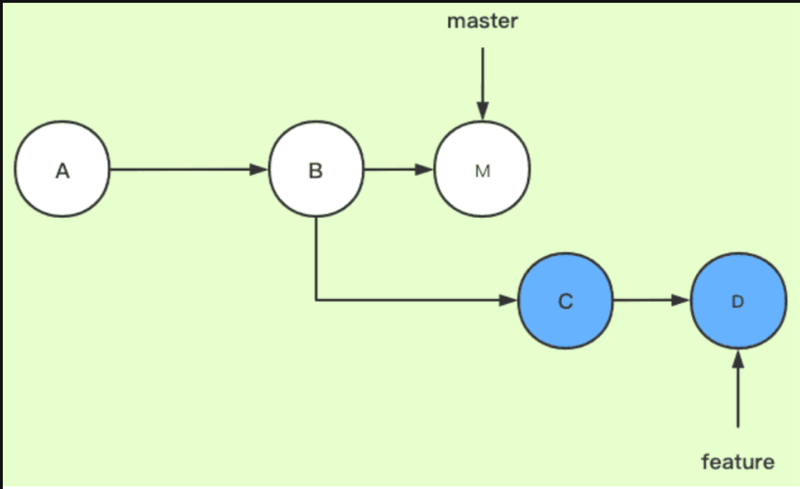
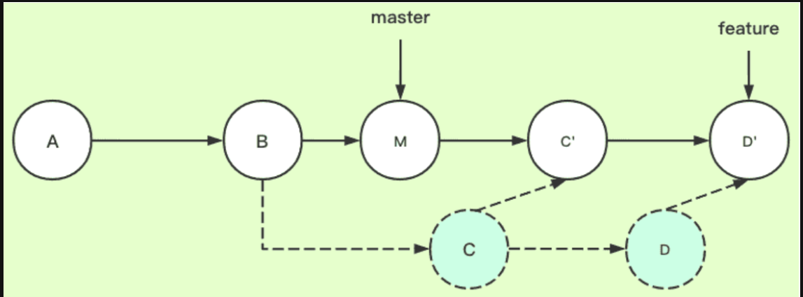

Git指令 本文最后更新于 2024年9月22日 晚上 12git config --global user.name ""git config --global user.email 123git initgit add *.cgit commit -m "message" 1git clone https://github.com/libgit2/libgit2 mylibgit 1git status 1git diff 1234567git log -p -2# -p代表显示每次提交的内容差异,-2表示仅显示最近两次的提交git log -stat#统计数据git log --pretty=onelinegit log --pretty=format:"%h - %an, %ar : %s"git log --since =2.weeks 12git commit -amend#撤销 1git reset HEAD CONTRIBUTING.md 1git checkout -- CONTRIBUTING.md 1234567891011121314git remote -v#查看远程仓库git remote add pb https://...# pb是简写git fetch [remote-name]git push origin mastergit showgit remote rename pb paul# 重命名git remote rm paul# 删除 123git tag# 列出标签git tag v1.4 -m "my version 1.4" 12345678git checkout -b iss53#创建并切换到分支git branch -d hotfix#删除git branch --mergedgit branch --no-mergedgit merge A.txt#合并 1git push origin serverfix 123456789git fetch origin#从服务器上抓取数据git checkout --track origin/serverfixgit checkout -b sf origin/serverfix# 拉取分支,sf是自定义名git branch -vv#查看追踪分支git branch -u orgin.serverfix# 设置已有的本地分支跟踪一个刚刚拉取下来的远程分支 1234git fetch# 从服务器上抓取本地没有的数据git pull# 含义是git fetch + git merge 12git push origin --delete serverfix# 删除远程分支 12git rebase master# 将当前分支变基到master分支上  12git checkout featuregit rebase master  1234git clone /opt/git/project.gitgit clone file:///opt/git/project.gitgit remote add local_proj /opt/git/project.git# 增加本地版本库到现有的Git项目 12scp -r test.git meteor041@github.com:meteor041/test.git 12345cd ~./sshls# 查看密钥ssh-keygen# chuang'jian Git指令 https://meteor041.git.io/2024/09/22/Git指令/ 作者 meteor041 发布于 2024年9月22日 许可协议 Commitizen的使用 上一篇 力扣周赛415 下一篇 Please enable JavaScript to view the comments